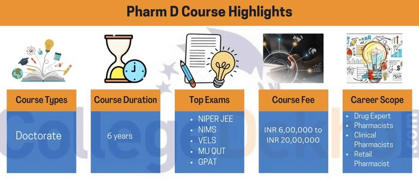
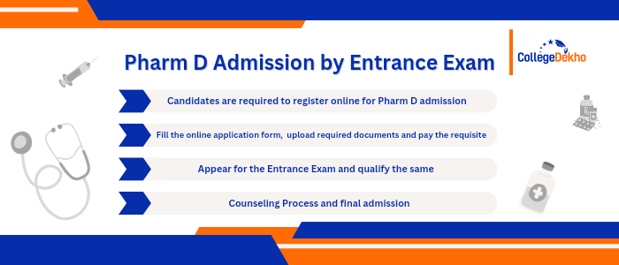
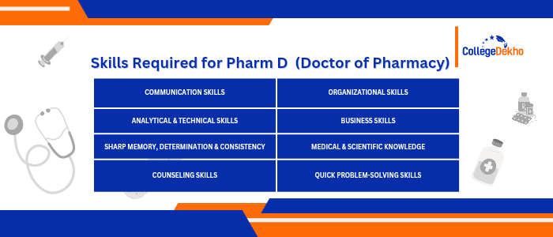
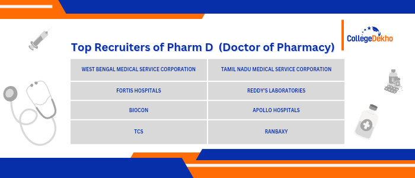

- We’re on your favourite socials!


Pharm D Course - Doctor of Pharmacy
 Save
Save Request a callback
Request a callback Ask us
Ask us
Pharm D Course is an integrated six-year programme for aspirants of Pharmaceutical courses. 12th-pass students with PCB/M stream can apply for this course. Alternatively, those who have completed B Pharm can apply for lateral entry. Admission to the course is done either through entrance exams or direct entry after Class 12. Upon graduation, candidates can apply for job roles like drug experts, retail pharmacists, and hospital pharmacy directors, and work at hospitals, clinics, community centers, etc.
Pharm D Course Overview
Pharm D Course is a professional doctoral degree conferred for Pharmacy subjects focusing on clinical practice rather than research. The full form of the Pharm D course is a Doctorate in Pharmacy. The duration of the course is 6 years. Pharm D course students are trained in clinical pharmacy and they play a critical role in patient management. Furthermore, it prepares students for positions at healthcare institutions and pharmacies.
Pharm D course eligibility requires that a student must have passed Class 12 with a minimum of 50% aggregate marks. Also, they must have chosen the Science stream with PCB/M subjects. Some institutions consider entrance scores, and others accept Class 12 scores for admission to the Pharm D courses. Candidates can appear for popular entrance exams like KCET, NEET, TS EAMCET, GPAT, AP PGECET, AP EAMCET, etc., for admissions. Some of the top institutes for this course Maharishi Markandeshwar University, Parul University, SRIHER, Andhra University, etc are some of the popular institutions. The Pharm D course fees range anywhere between INR 2.3 Lakh and INR 9.6 Lakh.
The Pharm D syllabus includes important subjects like Human Anatomy and Physiology, Pharmacology, Medicinal Chemistry, Community Medicine, and Hospital Pharmacy. There are several career options available after completing Pharm D: Drug Experts, Pharmacists in Hospitals, Hospital Pharmacy Directors, Clinical Pharmacists, Retail Pharmacists, etc. The average salary that a Pharm D graduate earns ranges between INR 2.30 LPA and INR 10 LPA.
Interested students can read further to learn more about the details of the Pharm D course.
Table of Contents
- Pharm D Course Overview
- Pharm D Course Highlights
- Why Choose the Pharm D Course?
- Pharm D Course Admission Process: How to Apply?
- Pharm D Course Eligibility Criteria
- Pharm D Course Entrance Exams
- List of Popular Pharm D Course Specialisations
- Pharm D Course Syllabus & Subjects
- Pharm D Course Important Books
- Difference Between Pharm D and B Pharma
- Difference between Pharm D and D Pharma
- Difference Between Pharm D and MBBS
- Difference Between Pharm D and BDS
- Pharm D Course Types
- Pharm D Course Fee
- Top Pharm D Course Colleges in India
- Top Government Pharm D Course Colleges in India
- Top Pharm D Course Private Colleges in India
- City-Wise Top Pharm D Course Colleges
- Pharm D Course Scope in India
- Pharm D Course Job Profiles & Salary
- FAQs about Pharm D
Pharm D Course Highlights
The course highlights of the Pharm D Course are given below.
| Particulars | Pharm D Course Details |
|---|---|
| Pharm D Full Form | Doctor of Pharmacy |
| Pharm D Course Level | Doctorate |
| Pharm D Course Duration | 6 years |
| Pharm D Course Examination Type | Semester-wise |
| Pharm D Course Eligibility Criteria | Class 12th Board exams with 50% aggregate mark in Science stream with Physics, Chemistry, and Biology/Math. |
| Pharm D Course Admission | Entrance exam/Merit based |
| Pharm D Course Fee | INR 2.3 LPA – INR 9.6 LPA |
| Pharm D Average Salary (per annum) | INR 2.3 LPA – INR 10 LPA |
| Pharm D Top Recruiting | Home health care, community pharmacy, clinical pharmacy, geriatric pharmacy, managed care, governmental agencies, etc. |
| Pharm D Job Profiles | Pharmacists, Drug experts, Retail Pharmacists, Hospital pharmacy directors, Hospital staff pharmacists, Clinical pharmacists, etc. |
| Pharm D Top Recruiters | Sun Pharmaceuticals, Zydus, Lupin, Piramal, Aurobindo Pharma, Cipla, Dr Reddy’s Laboratories, Cadila, Mylan Pharmaceuticals Inc., etc. |

Why Choose the Pharm D Course?
Here are some of the main reasons why you should enrol in the Pharm D course:
- Community Service: Pharm D graduates play a vital role in the community by contributing to the well-being of patients.
- Multiple employment options: Pharmacists can work in many areas such as businesses, nursing homes, hospitals, colleges, and the medical field.
- Consistent Work: They work as part of healthcare teams and collaborate with other experts to ensure that care is provided consistently.
- Growth: The pharmacy industry is growing at an increasing pace these days. According to a survey in 2021 by IBEF, the Indian pharmaceutical industry is projected to grow at a CAGR of over 10% to reach a size of US$ 130 billion by 2030.
- Flexibility: Work hours are flexible, which helps to balance work and personal life. There are day shifts, night shifts, seven-on-seven-off shifts, and so on. You can work one of the shifts that are most convenient for you.
- Autonomy: Work provides autonomy because you can choose your workplace and working hours. You can work for someone else or create your own company.
Pharm D Course Admission Process: How to Apply?
Pharm D admissions are conducted based on the general qualifying eligibility criteria and the individual admission criteria of colleges and universities. Admissions are mostly conducted through entrance examinations, followed by a round of counselling process. While the majority of the renowned colleges offer Pharm D admissions through written exam qualifications, some particular institutions offer admission based on a merit list. This merit list, therefore, is a result of the shortlisted candidates based on their 10+2 scores. Thus, the steps to apply for the Pharm D course admission process in India are listed below:
Pharm D Course Admission by Entrance Exam
- First, candidates must choose their desired list of colleges and keep tracking their current events to be at par.
- Candidates must register themselves and create their User ID and Password for login access. All candidates will be forwarded the User ID and Password to their registered Email ID or phone number.
- Next, candidates are required to fill out the application form and upload the scanned photograph and signature of the candidate.
- Now, all candidates must pay the requisite amount online to confirm their application form.
- It is important to note that candidates are required to upload the prescribed document for the payment gateway.
- Finally, all candidates are advised to download the application form with the transaction ID printed on the same.

Pharm D Course Admission by Merit-Based Selection
- Candidates are required to fill out the application form from the official website and upload all the necessary documents.
- They must have secured the desired percentage of marks in their 10+2 in order to be eligible for admission to Pharm D.
- All candidates must remember that the respective merit lists for colleges are released by the concerned authorities at the specified date and time.
- Check the merit lists to verify if one is eligible for Pharm D admissions. Visit the college and submit the necessary documents.
Pharm D Course Eligibility Criteria
Doctor of Pharmacy is primarily of two types: Pharm D (6 years) and Pharm D Lateral Entry (3 Years). The eligibility criteria in both cases are very similar. Mentioned below is a detailed description of Pharm D eligibility criteria.
| Particulars | Pharm D (6 years) | Pharm D Lateral Entry (3 Years) |
|---|---|---|
| Academic Qualifications |
|
|
| Age Limit | Must be at least 17 Years of age | - |
| Others | - |
|
Skills Required for Pharm D Course
For a clearer understanding of the subject matter and to become a successful professional in the field, it is important for students enrolled on a Pharm D course to acquire a set of important required skills. These skills ensure a successful and stable career prospect, enhancing good performance, and a wider spectrum of gaining knowledge. Thus, all candidates must remember to enhance these set of required skills while pursuing a Pharm D course, to aim for a greater prospect.
The most important Pharm D required skills are mentioned below:

Pharm D Course Entrance Exams
Candidates need to pass the Pharm D course entrance exams in Indiaas part of the admission process. Several entrance exams are conducted for this purpose. These are conducted both at the state and national levels. Popular entrance exams are
| Exam Name | Details |
|---|---|
| AP EAMCET |
|
| TS EAMCET |
|
| NIMS Entrance Exam |
|
| VELS Entrance Exam |
|
| MET |
|
| MHT CET |
|
| Integral University Entrance Test |
|
List of Popular Pharm D Course Specialisations
Students participating in the Pharm D course must finish the Indian Pharmacy Council's regular curriculum. A Ph.D. in Pharmacy, on the other hand, allows individuals to specialise in a variety of areas based on their interests and inclinations. Some of the popular specialisations are as follows
- Pharmaceutical Technology
- Pathology
- Pharmaceutical R&D
- Medicine in general
- Medicinal Chemistry
- Industrial pharmacies
- Radiology
- Microbiology
Pharm D Course Syllabus & Subjects
The Pharm D subject list gives students a thorough understanding of pharmacological science and its varied applications. The Pharm D subjects focus on fundamental areas throughout the five-year academic programme, which includes a one-year internship. To make the Pharm D course more flexible, students study the disciplines in the Pharm D degree over a 10-semester period.
The Pharm D course curriculum is highlighted in the following section. The Pharm D subjects semester wise is listed below:
| Semester I | Semester II |
|---|---|
| Human Anatomy and Physiology | Pharmaceutics |
| Medicinal Biochemistry | Pharmaceutical Organic Chemistry |
| Pharmaceutical Inorganic Chemistry | Remedial Mathematics/Biology |
| Semester III | Semester IV |
| Pathophysiology | Pharmaceutical Microbiology |
| Pharmacognosy & Phytopharmaceuticals | Pharmacology- I |
| Community Pharmacy | Pharmacotherapeutics - I |
| Semester V | Semester VI |
| Pharmacology - II | Pharmaceutical Analysis |
| Pharmacotherapeutics - II | Pharmaceutical Jurisprudence |
| Medicinal Chemistry | Pharmaceutical Formulations |
| Semester VII | Semester VIII |
| Pharmacotherapeutics - III | Hospital Pharmacy |
| Clinical Pharmacy | Biostatistics and Research Methodology |
| Biopharmaceutics and Pharmacokinetics | Clinical Toxicology |
| Semester IX | Semester X |
| Clinical Research | Pharmacoepidemiology & Pharmacoeconomics |
| Clinical Pharmacokinetics | Pharmacotherapeutic Drug Monitoring |
| Clerkship | Project Work (Six months) |
Pharm D Course Important Books
Reference books allow us to study topics and concepts in-depth. Hence, it is crucial to choose the right set of Pharm D course books PDF. Here are the best books that assist aspirants while pursuing the PharmD course.
| Books | Authors |
|---|---|
| Pharmacy practice | Harikishan Singh |
| Hospital & clinical pharmacy | Paradkar, Siddique, Yadav |
| Handbook of drug information | Lacy Armstrong |
| Clinical pharmacology | Roger walker |
| Basic physiology | Sreekumar |
| Drug design | A.V.Kulkarni |
| Microbiology | Pelzer |
| Pharmacotherapeutics | Dipiro |
| Medical physiology | Guyton |
| Pharmaceutics | Aulton |
| Anatomy & physiology | Toro – Toro |
| Mathematics | S.S. Rangi |
| Immunology | Kuby |
| Organic chemistry | Morrison |
| Pharmacognosy | Kokate |
Difference Between Pharm D and B Pharma
While Pharm D is a doctoral program, B Pharma is an undergraduate course program that primarily focuses on the technical and scientific aspects of the pharmaceutical industry. Pharm D, however, provides an essence of clinical studies by preparing students to work as clinical pharmacists directly engaging with patients, medicating therapies, and contributing to the larger medical care teams. So, a Pharm D course after B Pharm is possible.
A course comparison between Pharm D and B Pharma has been mentioned below for better insight:
| Particulars | Pharm D | B Pharmacy |
|---|---|---|
| Course Level | Doctoral | UG |
| Course Duration | 6 years | 4 years |
| Annual Fee (average) | INR 2.3 LPA – INR 9.6 LPA | INR 40k - INR 2 LPA |
| Entrance Exams | TS EAMCET, AP EAMCET, KCET, GPAT, AP PGECET, TS PGECET, NEET, etc. | NEET, CUET, AP EAMCET, TS EAMCET, KCET, KEAM, etc |
| Popular College | JIPMER Puducherry, King George's Medical University, Banaras Hindu University, National Institute of Mental Health and Neurosciences | Sri Ramachandra Institute of Higher Education and Research, Madras Medical College, BITS Pilani, SOA University, Datta Meghe Institute of Higher Education and Research, etc. |
| Job Profiles | Research Scientist, Regulatory Affairs Manager, Quality Assurance Manager, Medical Writer, Clinical Pharmacist, etc. | Medical Writer, Clinical Researcher, Drug Inspector, Medical Representative, Pharmacy Business, etc. |
| Average Salary | INR 2.3 LPA – INR 10 LPA | INR 1.8 LPA - INR 6.5 LPA |
| Top Recruiters | Lupin, Cipla, Piramal, Sun Pharmaceuticals, Aurobindo Pharma, Dr Reddy’s Laboratories, Mylan Pharmaceuticals Inc., Zydus Cadila, etc. | Sun Pharmaceutical Industries Ltd., Dr Reddy’s Laboratories Ltd., Divis Laboratories Ltd., Cipla Ltd., Biocon Ltd., etc. |
Difference between Pharm D and D Pharma
With the growing popularity of Pharmacy courses, the scope for the profession of a Pharmacist has significantly increased in the recent years. Pharmaceutical sciences encompass a wide range of medical, pharmaceutical, scientific, and educational topics. Due to the expanding scope of pharmacy, the need for pharmacists has risen considerably in India.
India offers three types of pharmacy courses at the undergraduate and postgraduate levels. Students can choose between a Diploma in Pharmacy (D Pharm course) and a Doctorate of Pharmacy (Pharm D courses) at the undergraduate or doctorate level. Also, a master's degree in pharmacy is accessible at the postgraduate level (M Pharm).
Here is the difference between D Pharma and Doctorate of Pharmacy (Pharm D courses) tabulated below:
| Particulars | Diploma in Pharmacy (D Pharma course) | Doctorate of Pharmacy (Pharm D course) |
|---|---|---|
| Name of the course | Diploma in Pharmacy | Doctor of Pharmacy |
| Level of education | Undergraduate | Doctorate |
| Course type | Diploma course | Degree |
| Duration of course | 2 years | 6 years |
| Internship/training | No | Yes |
| Specialisations offered | No | Yes |
| Eligibility | Passed class 12 with 55% marks | Qualified class 12 with at least 60% marks |
| Subjects studied | Physics, Chemistry, Biology | Physics, Chemistry, Biology, Maths |
| Admission criteria | State entrance exams, university entrance tests, counseling based, merit-based admission | National/State level entrance tests |
| Exams accepted | AP EAMCET, state-level counselling, etc. | NIMSEE, GPAT, BV – CET, SRMJEE, etc. |
| Subjects included in the course curriculum | Human Anatomy & Physiology, Health Education & Community Pharmacy, Pharmacology & Toxicology, Pharmaceutical Jurisprudence, Drug Store and Business Management, Hospital & Clinical Pharmacy, Pharmaceutics, Pharmaceutical Chemistry, Pharmacognosy, Biochemistry & Clinical Pathology, etc. | Human Anatomy and Physiology, Pharmaceutics, Medicinal Biochemistry, Pharmaceutical Organic Chemistry, Pharmaceutical Inorganic Chemistry, Pharmaceutical Inorganic Chemistry, etc. |
| Average Annual Fees | INR 80,000 | INR 2.3 LPA – INR 9.6 LPA |
Difference Between Pharm D and MBBS
While Pharm D and MBBS course both provide an extensive knowledge of the field of medicine, their individual roles in the industry are varied and divided by a few parameters. A course comparison between Pharm D and MBBS has been mentioned below for better insight:
| Particulars | Pharm D | MBBS |
|---|---|---|
| Course Level | Doctoral | UG |
| Course Duration | 6 years | 5 years |
| Annual Fee (average) | INR 2.3 LPA – INR 9.6 LPA | INR 50k - INR 25 LPA |
| Entrance Exams | TS EAMCET, AP EAMCET, KCET, GPAT, AP PGECET, TS PGECET, NEET, etc. | NEET |
| Popular College | JIPMER Puducherry, King George's Medical University, Banaras Hindu University, National Institute of Mental Health and Neurosciences | AIIMS Delhi, Christian Medical College Vellore, Banaras Hindu University, JIPMER Puducherry, etc. |
| Job Profiles | Research Scientist, Regulatory Affairs Manager, Quality Assurance Manager, Medical Writer, Clinical Pharmacist, etc. | Medical Surgeon, Medical officers, Paediatrician, General Physician, etc. |
| Average Salary | INR 2 LPA - INR 10 LPA | INR 4 LPA - INR 25 LPA |
| Top Recruiters | Lupin, Cipla, Piramal, Sun Pharmaceuticals, Aurobindo Pharma, Dr Reddy’s Laboratories, Mylan Pharmaceuticals Inc., Zydus Cadila, etc. | Medanta Hospitals, Lilavati Hospital and Research Centre, Fortis Healthcare Ltd, Wockhardt Ltd, etc. |
Difference Between Pharm D and BDS
A detailed comparison between Pharm D and BDS Course has been mentioned below for reference:
| Particulars | Pharm D | BDS |
|---|---|---|
| Course Level | Doctoral | UG |
| Course Duration | 6 years | 5 years |
| Annual Fee (average) | INR 2.3 LPA – INR 9.6 LPA | INR 30k - INR 9 LPA |
| Entrance Exams | TS EAMCET, AP EAMCET, KCET, GPAT, AP PGECET, TS PGECET, NEET, etc. | NEET |
| Popular College | JIPMER Puducherry, King George's Medical University, Banaras Hindu University, National Institute of Mental Health and Neurosciences | All India Institute of Medical Sciences, JIPMER Puducherry, King George's Medical University, Banaras Hindu University, National Institute of Mental Health and Neurosciences, etc. |
| Job Profiles | Research Scientist, Regulatory Affairs Manager, Quality Assurance Manager, Medical Writer, Clinical Pharmacist, etc. | Dentist, Dental officer in Defense Services, Dentist in Indian Railways, Lecturer, Researcher, etc. |
| Average Salary | INR 2 LPA - INR 10 LPA | INR 4 LPA - INR 20 LPA |
| Top Recruiters | Lupin, Cipla, Piramal, Sun Pharmaceuticals, Aurobindo Pharma, Dr Reddy’s Laboratories, Mylan Pharmaceuticals Inc., Zydus Cadila, etc. | Hospitals, Dental Clinics, Educational Institutes, Dental Product Manufacturers etc. |
Pharm D Course Types
All interested individuals who wish to serve in the healthcare industry, however, don't want a complicated course of study, should opt for a Pharm D course. While the course duration of the standard Pharm D is 6-years, there is another type of Pharm D course which is a 3-year long doctoral programme. Let's take a look at the two types of Pharm D courses, namely, Pharm D in Pharmacy (Pre-Baccalaureate) & Pharm D in Pharmacy (Post Baccalaureate):
| Particulars | Pharm D (Pre-Baccalaureate) | Pharm D (Post Baccalaureate) |
|---|---|---|
| Course Duration | The course duration of Pharm D in Pharmacy (Pre-Baccalaureate) is 5 years + 1 year of internship period i.e., 6 years. | The course duration of Pharm D in Pharmacy (Post Baccalaureate) is 2 years + 1 year of internship period i.e., 3 years. |
| Internship Program | 1 year mandatory hospital internship program. | 1 year mandatory hospital internship program. |
| Eligibility Criteria | Students who have completed their 10+2 qualifications with required marks in the subjects are eligible to apply for this course. | Students who have completed their graduation in B Pharmacy or in Diploma in Pharmacy are eligible to apply for this course. |
| Average Course Fee | INR 2.3 LPA – INR 9.6 LPA | INR 40,000 to INR 5 LPA approx. |
| Syllabus Structure | The 5-year course syllabus is divided into 10 semesters, and the last two semesters include the practical aspects of the internship period. | The 2-year course syllabus is divided into 4 semesters, and the last two semesters include the practical aspects of the internship period. |
Pharm D Course Fee
Pharm D course fee varies depending on the college or school. The Pharm D fees typically range from INR 1 LPA to INR 10 LPA. Candidates who fit into one of the reserved category groups or quotas are also given a stipend by each Pharm D college/university. Some reputed universities provide grants in Pharm D course fees to reserved category students.
Mentioned below are some of the average annual fee structures for different Government and Private colleges, for students to take reference from:
| Name of the College | Average Total Fees |
|---|---|
| Annamalai University | INR 1.59 Lakhs |
| Srinivas Group of Colleges | INR 4.07 Lakhs |
| Saurashtra University | INR 1.5 Lakhs |
| Parul University | INR 13.33 Lakhs |
| East Point of Institutions | INR 15.9 Lakhs |
| Sri Ramachandra Institute of Higher Education and Research | INR 9 Lakhs |
| L M College of Pharmacy | INR 10.5 Lakhs |
| Maharishi Markandeshwar University | INR 8.7 Lakhs |
Top Pharm D Course Colleges in India
In India, there are approximately 250 Pharm D colleges. Some of the best Pharm D colleges and institutions have been tabulated below.
The following is a list of the Top Pharm D colleges in India along with their average annual fees (INR)
| College Name | Pharm D Fees Annual (Average) |
|---|---|
| Chandigarh University | INR 1.33 LPA |
| NIMS University | INR 2 - 2.5 LPA |
| Manipal College of Pharmaceutical Sciences | INR 10 - 25 LPA |
| JSS College of Pharmacy | INR 3.53 LPA |
| LM College of Pharmacy | INR 1.75 LPA |
| Poona College of Pharmacy | INR 1.75 LPA |
| MM College of Pharmacy | INR 1.45 LPA |
| SRM University of Technology | INR 5.1 LPA |
| Bharti Vidyapeeth Deemed University | INR 1.75 LPA |
| Dayananda Sagar University | INR 33- 67 K |
| MS Ramaiah University | INR 3.73 LPA |
| Krupanidhi College of Pharmacy | INR 67 K |
| Karnataka College of Pharmacy | INR 1.85 LPA |
| Sri Ramachandra Institute of Higher Education and Research, Chennai | INR 1.5 LPA |
| Vels University - Vel's Institute of Science Technology and Advanced Studies | INR 2.18 LPA |
| Sri Venkateshwara College of Pharmacy | INR 65- 80K |
Top Government Pharm D Course Colleges in India
Some of the top Pharm D Government colleges in India are mentioned below:
| Name of the Institute | Average Total Fees |
|---|---|
| Annamalai University | INR 1.59 Lakhs |
| Government College of Pharmacy, Amaravati | INR 2.4 Lakhs |
| Government College of Pharmacy, Aurangabad | INR 2.4 Lakhs |
| Saurashtra University | INR 1.5 Lakhs |
Top Pharm D Course Private Colleges in India
Top Pharm D colleges in India private and public have been mentioned below in detail for students’ reference, along with their average course fee:
| Institute Name | Average Total Fee |
|---|---|
| Sri Ramachandra Institute of Higher Education and Research | INR 9 Lakhs |
| Maharishi Markandeshwar University | INR 8.7 Lakhs |
| Parul University | INR 13.33 Lakhs |
| Geethanjali College of Pharmacy | INR 6 LPA |
| East Point Group of Institutions | INR 15.9 Lakhs |
| VELS Institute of Science, Technology and Advanced Studies (VISTAS) | INR 2.18 Lakh |
City-Wise Top Pharm D Course Colleges
Every state and city has the same entrance criteria for Pharm D admission. Mainly, Pharm D admission is decided using both the merit list and the entrance examination.
In the merit list Pharm D admission process, colleges and universities evaluate applicants' qualifying exam results as a crucial factor. Several Pharm D colleges, universities and institutes, however, require candidates to take an admission exam in order to be enrolled in a Pharm D degree programme. The results of the students' entrance tests are used to determine admission.
Pharm.D colleges in Bangalore
Here is the list of top PharmD colleges in Bangalore along with fees.
| College Names | Average Annual Fees |
|---|---|
| Krupanidhi College of Pharmacy | INR 67 K |
| MS Ramaiah University | INR 3.73 Lakh |
| Dayananda Sagar University | INR 33 - 67 K |
| T John College of Pharmacy | INR 65- 67 K |
| Karnataka College of Pharmacy | INR 1.85 Lakh |
Pharm.D colleges in Hyderabad
Here is the list of top PharmD colleges in Hyderabad along with fees.
| College Names | Average Annual Fees |
|---|---|
| Anurag Group of Institutions | INR 1.25 Lakh |
| Sri Venkateshwara College of Pharmacy | INR 65- 80K |
| Sultan Ul Uloom College of Pharmacy | INR 80K |
| RBVRR Women’s College of Pharmacy | INR 1 Lakh |
| Malla Reddy College of Pharmacy | INR 90 L - 1 LPA |
Pharm.D colleges in Coimbatore
Here is the list of top PharmD colleges in Coimbatore along with fees.
| College Names | Average Annual Fees |
|---|---|
| RVS College of Pharmaceutical Science, Coimbatore | INR 68 K |
| Sri Ramakrishna Institute of Paramedical Sciences, Coimbatore | INR 1.5 Lakh |
| Karpagam College of Pharmacy | INR 3.18 Lakh |
Pharm.D colleges in Chennai
Here is the list of top PharmD colleges in Chennai along with fees.
| College Names | Average Annual Fees |
|---|---|
| Vels University - Vel's Institute of Science Technology and Advanced Studies | INR 2.18 Lakh |
| Sri Ramachandra Institute of Higher Education and Research, Chennai | INR 1.5 Lakh |
| Jaya College of Paramedical Sciences College of Pharmacy | INR 45K |
Pharm D Course Scope in India
Pharm D jobs are accessible in a variety of pharmaceutical and medical firms after graduation. Graduates with a Pharm D degree can work in both the private and public sectors. The programme prepares students for a wide range of Pharm D course job opportunities that have arisen as a result of the public's demand for better healthcare.
After the Pharm D course, there are numerous academic and job opportunities available for the graduates.
- Once the Pharm D course is completed, you can continue your education with a Bachelor's degree in pharmacy or the second year of B Pharma.
- You can get work in private and government hospital pharmacies. You can work at health clinics, NGOs, and other organisations by inspecting and advising on the delivery of medications.
- You can start your own retail or wholesale pharmacy and become an entrepreneur.
- Health centres, drug control administration, and medical dispensing stores are the leading recruitment sectors for Pharm D.
Pharm D Course Job Profiles & Salary
Pharm D career opportunities include a variety of industries, such as BPOs, KPOs, governmental organisations, healthcare services, and business firms. The market is changing, and the demand for Pharm D courses in India is increasing in both the public and private sectors, indicating a significant shortage of healthcare and pharmaceutical professionals.
The various Pharm D job profiles are discussed in detail below, along with the functions they play and the average annual compensation they earn. Here are some of the Pharm D job profiles tabulated below:
| Job profiles | Description |
|---|---|
| Pharmacist | A pharmacist's job is to make sure that the drugs that are delivered to patients are proper and of good quality. They must advise patients on how to take medications, when to take them, and how to take them. |
| Hospital pharmacy director | The hospital pharmacy director's responsibilities include drug distribution, drug control, medication safety, clinical services such as patient care, and so on. |
| Retail pharmacist | Retail pharmacists are responsible for dispensing and controlling both prescribed and non-prescribed medications. They place orders for medicines and other supplies and sell them. |
| Drug expert | A drug expert's job is to draft medicine use policies, rules, and regulations. They ensure that the healthcare system improves. distributing prescription information in the form of newsletters. |
| Clinical pharmacists | Clinical pharmacists' job is to look after patients and keep track of their health. Assesses the efficacy of patients' medications. |
Salary After Pharm D Course
Mentioned below is a list of average salary packages of different job profiles that are usually offered to individuals in the field of Pharm D. Check out the average Pharm D course salary in India:
| Job profiles | Average Annual Salary |
|---|---|
| Pharmacist | INR 2.8 LPA |
| Hospital pharmacy director | INR 3.9 LPA |
| Retail pharmacist | INR 2 LPA |
| Drug expert | INR 5.8 LPA |
| Clinical pharmacists | INR 3 LPA |
Top Recruiters of Pharm D Course
If the candidate does not want to work as a pharmacist right after finishing the Pharm D course, they can pursue higher education in MBA, MD, MS, PhD, and M Phil. Some of the top fields of recruiting in India that give a good Pharm D salary are listed below:

FAQs about Pharm D
Are Pharm D and D Pharma the same?
No, D. Pharma is a Diploma in Pharmacy which is a 2-year diploma course and Pharm D aka Doctor in Pharmacy is a 6-year degree course.
What is the role of PharmD in a hospital?
Pharm D graduates can explore career in administrative duties, drug distribution, clinical service patient care, ensuring medication safety, drug control, and activities for quality as well as performance improvement at hospitals.
What is Pharm D's salary in India?
A graduate with a Doctor of Pharmacy degree can bag a salary between INR 2 LPA and INR 10 LPA based on skillset and experience.
Can Pharm D graduates treat patients?
Pharm D degree holders can recommend drug compositions and medications to patients, however, they are not allowed to treat patients with complex medical conditions.
Can Pharm D graduates conduct surgery?
No, Pharm D graduates cannot perform surgeries. They need an MD degree to do the same.
Is Pharm D equal to Doctor?
Candidates holding this degree are allowed to use the 'Dr. ' prefix. They are not medical practising doctors.
Can I go abroad after completing Pharm D course?
Yes, there are several opportunities available abroad for Pharm D graduates. One can either opt to become a licensed pharmacist or pursue master's/Ph.D. programmes. Individuals can also work in various healthcare organizations or participate in research and development.
Is Pharm D better than MBBS?
MBBS and Pharm D are often considered at par with each other. Pharmacy doctors have sound expertise in clinical pharmacy practice & drug therapy while MBBS graduates have deep knowledge of medicine.
Is maths necessary for pharmacy?
No, aspirants don’t need to opt for Maths if they wish to pursue Pharm D.
What can I opt for after Pharm D?
Candidates can opt for the following job profiles after completing the Pharm D course. The scope in India for Pharm D course graduates is; they can work as a pharmacist in clinical practice, Director of Pharmacy at a Hospital, Pharmacist on the staff of a hospital, Medical Journalist, Advisor on pharmaceuticals, Doctor of Medical Safety, Leader in supply logistics, Associate in Drug Safety, etc.
Is the Entrance examination compulsory for Pharm D?
Yes, some universities demand students to take an entrance exam before being accepted into the Pharm D course. Admission to the Pharm D course is based on a merit list or an entrance examination. BV CET, MET, GPAT, and other popular entry exams are examples. To study the Pharm D course , students must have studied science courses in high schools, such as physics, math, chemistry, or biology. Some universities accept students instantly based on their Class 12 Boards test results. These schools do not require entrance examinations.
Is Pharm D a good career?
Pharm D course graduates can work in colleges and universities all around the world as research associates, teachers, lecturers, and other positions. Furthermore, not just pharmaceutical firms but even biotech companies employ pharmacists to this extent.
Can I do Pharm D after the 12th?
Students who have passed the 12th Science board exams can enrol in a regular Pharm D course. B Pharm graduates can enrol in a Post-Baccalaureate Pharm D course. The Pharm D course covers both traditional pharmacy topics and practical pharmacy practices.
What are the top colleges offering PharmD (Doctor of Pharmacy) courses?
Following are some of the top colleges offering Pharmacy courses: Birla Institute of Technology (Ranchi), Manipal College of Pharmaceutical Sciences (Manipal), L. M. College of Pharmacy (Ahmedabad), Madras Medical College (Chennai), JAMIA HAMDARD (New Delhi). You can explore these colleges on our website to check if they offer PharmD (Doctor of Pharmacy) or not.
I want admission to PharmD (Doctor of Pharmacy). Do I have to clear any exams for that?
Delhi University Arts and Delhi University Science are some of the exams that you can appear for to get admission in PharmD (Doctor of Pharmacy) courses.
What is the average fee for the course PharmD (Doctor of Pharmacy)?
The average fee for PharmD (Doctor of Pharmacy) is INR 4,50,000 per year.
Related Questions
Related News


Related Articles


Popular Courses
- Courses
- Pharm D